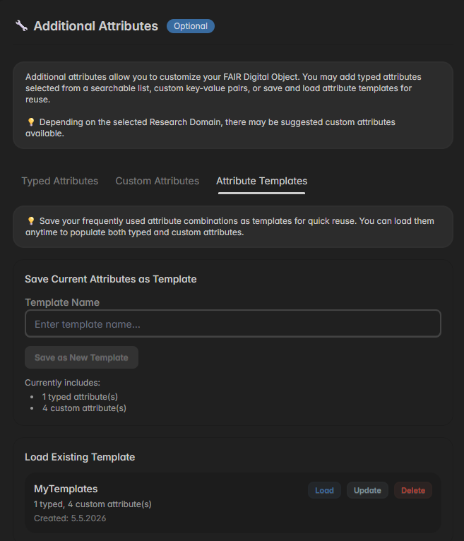

Modules
FAIR DO MoMenT organizes FAIR DO attributes into six modules. Each module contains specific fields that contribute to the overall FAIRness of the created FAIR DO. Depending on the selected template, some modules may or may not be available.
📋 Core Metadata

There are two attributes in core metadata: Research Domain and ORCID. Both attributes are supposed to give context about the FAIR Digital Object, and it's creator. The research domain can be selected from a dropdown, which contains all research fields of the Helmholtz Association, for now. In the ORCID field, you have to paste your ORCiD (without base URL), which will then be resolved and validated automatically. As these two attributes rarely change, you may pre-configure them in your → Profile Settings
🗄 Data Object Metadata

For data objects, FAIR DO MoMenT provides the attributes Data Object URL, MIME-Type, and License. The URL will be checked for accessibility after pasting it. The other two attributes must be manually selected, for now. Depending on the research domain selected in the Core Metadata, domain-specific values may be suggested below the attribute inputs (see MIME-Types in screenshot). In the license selection component you will also find some information on which license to use in case there is no license assigned to the data referred by Data Object URL, yet.
💻 Software Metadata

For software, there are four attributes: Repository Platform, Repository URL, License, and README URL. First, select the Repository Platform where your software is located. Currently, four platforms are supported. If your platform is not in the list, you may select "Other", but you will lose the possibility to auto-detect other attributes. Then, add the Repository URL where your software is located. After clicking "Import", FAIR DO MoMenT will try to obtain information about License and README URL. If this fails or if you selected "Other" before, you have to provide these information manually.
📚 Publication Metadata

Attributes in the publication module can typically be obtained via DOI. Therefor, add your publication's DOI in the DOI input field and click "Import". You may either only add the DOI or the full DOI URL. On import, FAIR DO MoMenT will check Zenodo, Crossref, and as fallback <Meta> tags in the referred landing page to obtain the remaining required attributes. If this fails, you have to provide them manually.
🔧 Additional Metadata
The Additional Metadata module is the only module in FAIR DO MoMenT that is fully optional, even if it is enabled. It allows you to add custom
key-value-pairs to a FAIR DO's PID record to add metadata that is not covered by other modules or to serve specific use cases or requirements.
There are two kinds of additional attributes: Typed Attributes and Custom Attributes, which are both explained in the following.
Typed Attributes

Typed Attributes allow you to choose from a growing selection of registered and curated attributes to enrich your FAIR DO's metadata for increased interoperability and reuse. To see all available typed attributes, open the combobox as soon as its content is loaded. You'll find them in different categories. You may also use the input field on top of the selection to search for attributes. Attributes in categories Core, DataObject, and Software are those which are also used in the available modules of FAIR DO MoMenT. However, by adding them as additional, typed attributes, you may also use them without using the specific module.
To add a new typed attribute, open the according category by clicking the arrow and click the attribute you want to add. Take care not to click the category name itself as this will close the selection popup. Once a typed attribute is selected, the attribute selection will be locked in and a form rendering the attribute's properties opens below. Depending on the attribute, the rendered form may look different and required different inputs. There are for example attributes based on a JSON-Schema definition rendering a complex input form, or attributes based on SPARQL queries rendering as interactive query interface to external RDF graphs. After all required inputs are filled, you can click "Add Typed Attribute" to add new attribute and the whole selection will reset. To change the selected attribute type manually, click "Change Type", but be aware, that all changes to the input form will be lost.
Custom Attributes

Compared to Typed Attributes, Custom Attributes are simple key-value pairs that can be defined as needed. They are not validated against any rules and may have a different semantic meaning depending on who assigned them in which context. FAIR DO MoMenT offers a small selection of custom attribute names, where some of them may be suggested depending on the research domain used in the Core Module. However, their value can be assigned according to your needs. To add a new custom attribute, either click on one of the suggested attribute keys to add the attribute to the list and then set an appropriate value. Alternatively, you can click "+ Add custom", open the attribute key selection by clicking it, and either select one of the predefined keys or enter an own attribute key. Afterward, fill-in the attribute value.
Attributes Templates

Attribute Templates allow the reuse of recurring attribute combinations, i.e., a set of constant key-value pairs for branding created FAIR DOs. To create a new attribute template, first add all typed and custom attributes as described before. Then switch to the attribute templates tab, enter a template name in the input field, and click "Save as New Template". The template is now available in the lower section, from where it can be loaded, updated, or deleted. Loading a template removed all currently existing attributes, and replaces them by the attributes and values in the template. To update a template load it first, then add or remove attributes as required, before you save the template again with the same name.